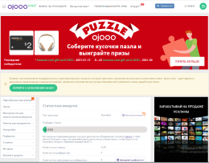
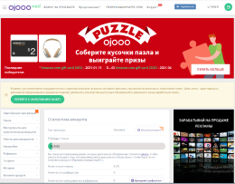

Русскоязычные

Виды заработка делятся на выполнения заданий пользователей, платные опросы, посещения, чтение писем, прохождение тестов, лайки и подписки на платформах ютуб и вконтакте. Также предусмотрена двухуровневая реферальная программа. Первый уровень подразумевает регистрацию нового пользователя по вашей реферальной ссылке, второй - по ссылке вашего реферала. В последствии вы получаете процент от заработка как непосредственно от вашего реферала, так и от рефералов вашего реферала.
Вывод средств производится на электронные кошельки WebMoney, Юmoney, Qiwi, Perfect Money, Payeer, AdvCash или мобильный телефон.
Перейти на сайтВывод средств производится на электронные кошельки WebMoney, Юmoney, Qiwi, Perfect Money, Payeer, AdvCash, VISA, MasterCard или мобильный телефон.
Перейти на сайтВывод средств производится на электронные кошельки WebMoney, Юmoney, Qiwi, Perfect Money, Payeer, VISA, MasterCard или мобильный телефон.
Перейти на сайтВывод средств производится на электронные кошельки WebMoney, Юmoney, Qiwi, Perfect Money, Payeer, или мобильный телефон.
Перейти на сайтЗарубежные
 

Wad OJOOO - сервис компании, предоставляющий возможность зарабатывать на просмотрах, участии в опросах, тестировании игр, рефералах. Особенностью сервиса является опция аренды рефералов.
Вывод средств производится на любой криптовалютный кошелек.
Перейти на сайтВывод средств производится на PayPal или криптовалютный кошелек.
Перейти на сайтИгры
Вывод средств производится на электронные кошельки Юmoney, Qiwi, Payeer, RUB и UAH карты.
Перейти на сайтCaptcha
Вывод средств производится на электронные кошельки WebMoney, Bitcoin, BitcoinCash, AirTM, uphold, Perfect Money, Payeer, AdvCash.
Перейти на сайт